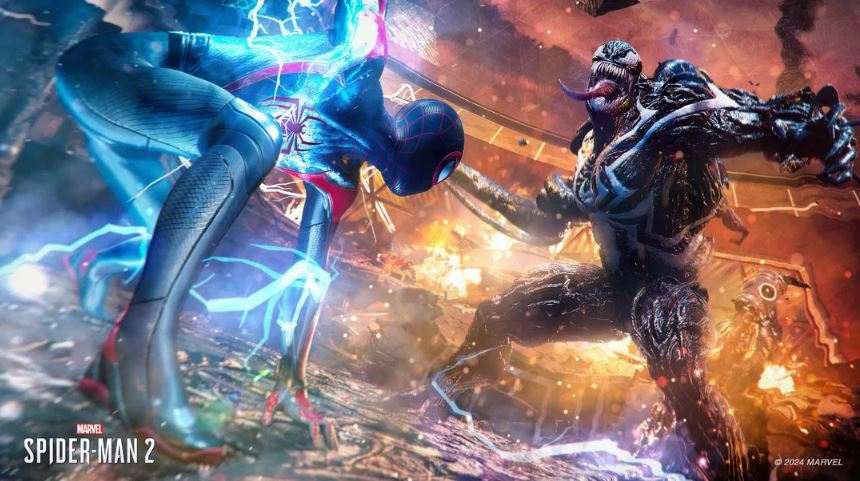
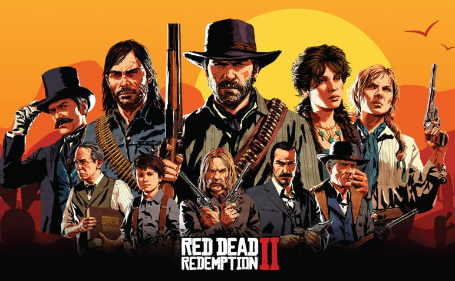
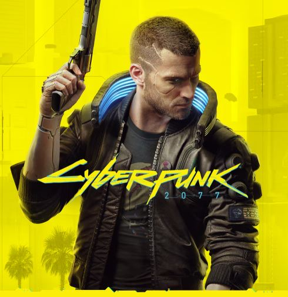
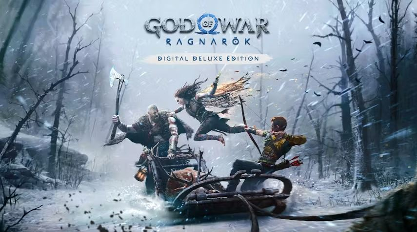
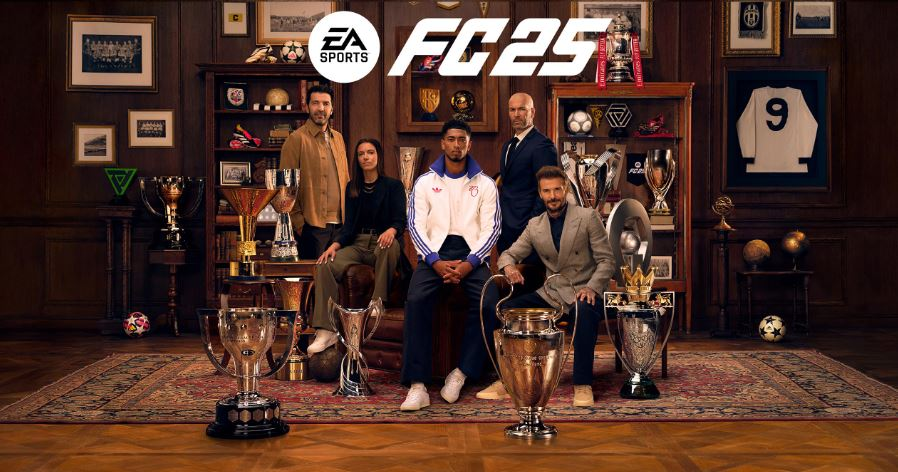

Jogos em Destaque

Marvel's Spider-Man 2
Em Marvel's Spider-Man 2, a cidade de Nova York se torna o seu playground, com Peter Parker e Miles Morales lutando para proteger seus entes queridos e a cidade de novas ameaças. Explore um mundo aberto expansivo, balanceie-se entre arranha-céus e use novos poderes e habilidades para enfrentar vilões icônicos como Venom e Kraven, o Caçador. A história se aprofunda nos desafios pessoais dos heróis, enquanto eles equilibram suas vidas pessoais e a responsabilidade de serem o Homem-Aranha. Prepare-se para uma aventura épica com combates intensos, exploração livre e uma narrativa emocionante que explora o legado do Homem-Aranha.

Red Dead Redemption 2
Red Dead Redemption 2 transporta você para o coração da América em 1899, onde a era dos cowboys chega ao fim. Assuma o papel de Arthur Morgan, um membro da gangue Van der Linde, enquanto eles fogem da lei em um mundo vasto e implacável. Experimente uma história épica de lealdade, sobrevivência e redenção, onde suas escolhas moldam o destino da gangue e de Arthur. Cace animais selvagens, explore cidades movimentadas e participe de assaltos ousados enquanto luta para sobreviver em um mundo que está mudando rapidamente.

Cyberpunk 2077
Cyberpunk 2077 mergulha você na metrópole futurista de Night City, uma cidade obcecada por poder, glamour e modificações corporais. Jogue como V, um mercenário em busca de um implante único que promete a imortalidade. Explore um mundo aberto vasto e detalhado, onde cada decisão tem consequências. Enfrente corporações corruptas, gangues perigosas e desvende os segredos sombrios de Night City. Personalize seu personagem com implantes cibernéticos, habilidades e armas para sobreviver em um mundo onde a tecnologia e a humanidade se misturam.

God of War Ragnarök
God of War Ragnarök continua a saga de Kratos e Atreus em uma jornada épica pela mitologia nórdica. Enquanto o Ragnarök se aproxima, eles buscam respostas e aliados para enfrentar os deuses nórdicos. Explore os Nove Reinos, enfrente monstros lendários e desvende os mistérios do passado de Kratos. A história se aprofunda na relação entre pai e filho, enquanto eles lutam para mudar o destino. Use o machado Leviatã, as Lâminas do Caos e novas armas para enfrentar inimigos poderosos e desvendar os segredos dos deuses.

EA Sports FC 25
EA Sports FC 25 redefine a experiência de simulação de futebol com gráficos realistas, jogabilidade imersiva e uma variedade de modos de jogo. Construa seu time dos sonhos, dispute campeonatos e torne-se uma lenda nos gramados virtuais. Com novas tecnologias e mecânicas de jogo, o EA Sports FC 25 oferece a experiência de futebol mais autêntica e emocionante até o momento. Domine o campo com dribles precisos, passes estratégicos e chutes poderosos enquanto compete contra jogadores de todo o mundo.